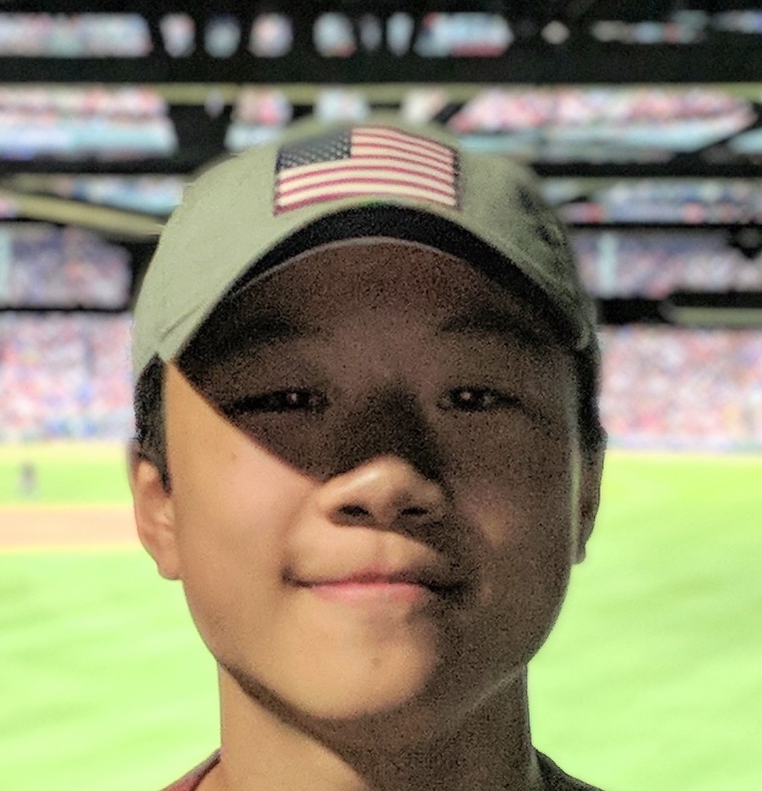

BF Team
|
Irena Bojanova is a computer scientist at NIST and the lead of the Bugs Framework (BF) project. Her
research interests are in formal methods, distributed systems, and program analysis for security. Irena
received her Ph.D. in Mathematics/ Computer Science from the Bulgarian Academy of Sciences. She is a senior
member of IEEE and serves as the Editor-in-Chief of the IT Professional magazine and as the Editor of the
Education column in IEEE Computer magazine. |
|
Carlos E. C. Galhardo is a researcher at the Brazilian National Institute of Metrology, Quality and
Technology, INMETRO. He is working at NIST as a guest researcher with the SAMATE--BF team. He earned his
Ph.D in Physics in 2010 from Universidade Federal Fluminense. His research interests include data analysis,
physics of information and software security in embedded systems (measurement instruments). |
|
Farhan Nadeem is an aspiring computer scientist at NIST. An avid technology enthusiast, he is currently
majoring in Computer Engineering at the University of Maryland. He is interested in programming, and is
studying Java. As a new member of the SAMATE team, he is working on the website for the Bugs Framework. |
Collaborators
|
Markus Schordan is a computer scientist at Lawrence Livermore National Laboratory (LLNL). Previously he
held positions at the University of Klagenfurt, Vienna University of Technology, and University of Applied
Sciences Technikum Wien. Throughout his career, he has been working on aspects of software verification,
compiler construction, high-performance computing, and reversible computation. Dr. Schordan is the Editor of
the Software Technology column of the IEEE IT Professional magazine. Most recently, he served as General
Chair of the International Symposium on Code Generation and Optimization (CGO 2018). |
|
Mehdi Mirakhorli is an associate professor and Kodak Endowed Scholar at Rochester Institute of Technology
(RIT). He is the founding director of Software Design and Productivity Laboratory and an affiliated member
of the Global Cybersecurity Institute at RIT. His research interests is on the intersection of Software
Engineering and Cybersecurity. Dr. Mirakhorli serves on the Editorial Board of the Journal of Software and
Systems (JSS) and IEEE Transaction in Software Engineering (TSE). He is recipient of NSF CAREER award and
multiple ACM SIGSOFT Distinguished Paper Awards.
|
 |
Sara Moshtari is a PhD student at Rochester Institute of Technology (RIT). She was an instructor at the IT
department of the University of Applied Science, Shiraz, Iran. She received her M.Sc in software engineering
from Shiraz University in 2013. Her research interests include software security, data-driven software
analysis, software vulnerability detection, and machine learning. She is also a software developer and works
with different programming languages.
|
Former Team Members and Interns
|
Paul E. Black has nearly 20 years of industrial experience in developing software for IC design and
verification, assuring software quality, and managing business data processing. He is the
founder and editor of the Dictionary of Algorithms and Data Structures https://www.nist.gov/dads/. Black
earned a Ph.D. from Brigham Young University in 1998. He taught classes at Brigham Young University and
Johns Hopkins University. He has published in static analysis, software testing, networks and queuing
analysis, formal methods, software verification, quantum computing, and computer forensics. He is a member
of ACM and a senior member of IEEE. |
|
Yaacov Yesha is a professor at the Department of Computer Science and Electrical Engineering at the
University of Maryland, Baltimore County. He earned his PhD in Computer Science in 1979 from the Weizmann
Institute of Science. His research interests include software assurance and cloud computing. |
 |
Yan Wu is an assistant professor at the Computer Science Department of Bowling Green State University.
Previously she was a guest researcher with the SAMATE team at NIST. She earned her Ph.D. degree in
Information Technology from the University of Nebraska at Omaha in 2011. Her research interests are software
engineering and software assurance. |
|  |
Kyle Sung is a NIST Intern and senior at Winston Churchill High School. With a passion for tech, Kyle
plans to study computer science in the near future. As a member of the SAMATE team, Kyle helps update and
maintain the Bugs Framework website. |
 |
Zachary Evans is a former NIST Volunteer, who currently works towards his Software Engineering degree at
RIT. |